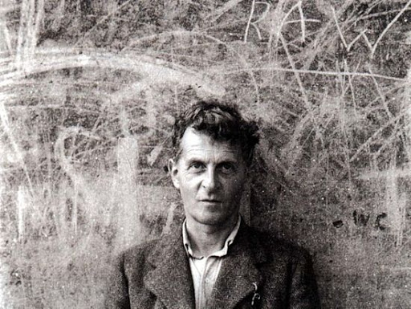

철학자 루트비히 비트겐슈타인은 저서 《철학 탐구》에서, 카테고리화에 관한 의논 중에서 게임의 정의를 내렸다. 이는 게임을 정의하고자 하는 최초의 기술로 여겨지고 있다. 게임이라 불리는 것은 룰이나 경쟁을 공통의 요소로서 가지고 있다. 그러나 그는 어떻게 게임을 정의하든지, 반드시 그 정의로부터 벗어나는 "게임(이라 칭해지는 활동)"이 있다면서, 그렇다 할지라도 게임이라 불리는 것은 일정한 유사점(가족적 유사성)에 의해 크게 포괄된다고 주장했다.
프랑스인 사회학자 로제 카유아는 저서 《놀이와 인간》(Les jeux et les hommes)에서 다음과 같이 게임을 정의했다. 즉 즐거움을 위하여 행하여지는 것, 시간과 장소가 정해져 있는 것, 승패의 여부가 확정적이지 않다는 것, 무언가를 생산하는 것이 아닌 것, 룰에 지배당하는 것, 현실의 활동으로부터 의미적으로 분리되어 있는 것을 게임의 참가자가 알고 있는 것이다.
게임 디자이너 그렉 코스티캔은 잡지 Interactive Fantasy의 기사 'I Have No Words & I Must Design'에서, "심시티"의 제작자 윌 라이트가 자신의 작품을 ("게임"이 아닌) "toy(장난감)"이라고 한 것을 인용하여 게임이란, "충분한 정보 아래 행하여지는 의사결정(decision making)이며, 플레이어가 주어진 자원을 관리 (managing resources)해 가며 스스로 참가하여 눈 앞의 장애물을 넘어 목표 달성을 향하는" 것이라고 하였다.
무엇을 해야하는지 목적은 정해져 있어야하고, 설계되어있어야한다. 다만, 그 목적을 향한 과정에서 일어나는 상호작용과 감정, 그로 인한 경험은 오롯이 플레이어에게 맡긴다. 던져줄 뿐이고, 어떻게 받아들일지는 그들에게 맡긴다. 신의 존재처럼